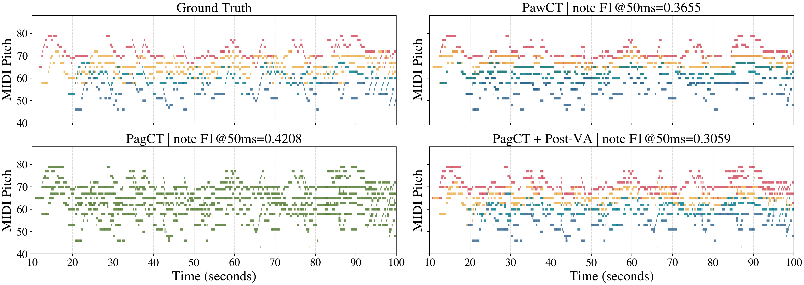

@ 50 ms
SATB note F1
Post-VA
retention ratio
Manuscript-reported values. They have not yet been regenerated from this repository snapshot.
One task, three views
Assignment belongs beside transcription.
PagCT finds the notes. Post-VA labels them afterward. PawCT learns both together, while the mixture can still resolve ambiguous crossings and soft choral onsets.
PagCT
Mixed audio becomes one merged stream of onset, frame, and offset probabilities.
audioCRNNnotes
PawCT
A shared encoder feeds four voice heads; an auxiliary presence task and union supervision keep part detail anchored to global note content.
audioshared CRNNS · A · T · B
Post-VA
A BiLSTM classifies PagCT's predicted notes after the acoustic stage has already finished.
notesBiLSTMS · A · T · B
inputMixed choir16 kHz waveform
sharedCRNN encoderlog-Mel · CNN · BiGRU
Soprano head
Alto head
Tenor head
Bass head
outputsSATB + unionfour note streams
Reported comparison
Union supervision changes the outcome.
Average across S/A/T/B on the manuscript's YouChorale test split. Note F1 uses a 50 ms onset tolerance. Values are reported, not rerun. Historical RP/OC frame values are not displayed because the audit found that they used method-specific pseudo-references and are not directly comparable.
Qualitative viewer
One passage, four readings.
Choose a system to inspect its quadrant of the manuscript visualization. Colors denote SATB parts; PagCT remains green because it is part-agnostic.

ReferenceGround truth SATB
The annotated voice trajectories provide the comparison target.
Exsultate Deo · 10–100 s
SopranoAltoTenorBassPart-agnostic
Release posture
Useful now. Reproducible after the missing evidence is frozen.
- Core PawCT, PagCT, Post-VA source mapped to the paper
- Internal paths removed; artifacts and datasets excluded
- Validation-first threshold workflow guarded in code
- Exact paper checkpoints, configs, and split hashes
- One-command Table 1/2 reproduction
- Rights-cleared audio-to-SATB listening examples